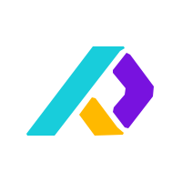

Health career break
I stepped away from full-time work to focus on my health. I'm back, designing again and looking for my next role.
Product & UX/UI designer in Madrid. I work out why complex products are hard to use, then fix them, with research, accessibility and design systems.
I stepped away from full-time work to focus on my health. I'm back, designing again and looking for my next role.
I was the only UX/UI designer across four educational products and worked from discovery through to implementation support. Teacher interviews, usability studies and behavioural analytics showed me how people used the resources and guided what we changed.
The work covered information architecture, navigation and search, responsive interfaces, prototypes and design system foundations. I checked accessibility against WCAG 2.1 and with screen readers, documented design decisions, and worked with product, engineering, editorial, legal and the Oxford UK teams until things shipped. I also supported workflows and UX documentation for AI-assisted educational experiences.

I joined a B2B product information management platform as its first dedicated UX hire. I reviewed complex workflows, went through user stories with product and engineering, and proposed interface improvements for the usability problems I found.
I introduced simple UX processes and documentation, kept component guidance in Zeroheight, and used Productboard and Shortcut to tie design decisions to delivery.
I worked with clients and organisations including IPSIK, Sheedo, Poplockslay, Lactando SOS, Alma en Pena and Ca-minando fronteras, as well as educational institutions, NGOs and e-commerce businesses, on websites, digital products, visual identities and editorial publications.
I handled the client conversations, scope, creative direction and handoff myself, and worked with developers during implementation.
Adapted artwork for personalised products, checking visual consistency and production requirements.
Researched sustainable physical product concepts, explored new product lines, and developed packaging and technical drawings.
Conducted product and market research and developed a smart-mirror concept for retail and home environments.
Interfaces, prototypes & workshops
Behavioural analytics
Usability testing & validation
Design system documentation
NVDA, JAWS & Microsoft Narrator
Product collaboration & delivery
Also: Adobe Creative Suite, Bootstrap, GitHub, Copilot and LLMs.
Responsible recreational boat concept recognised in the Mobility category.
Study grant supporting young people with creative potential in design.
Research design, quantitative and qualitative methods, statistical analysis, surveys and Python.
Product design, ergonomics, accessibility, interaction design and technical development.
Content analysis, qualitative methods, behavioural research and usability evaluation.
Spatial and experience design, exhibitions, sustainability and technical development.
Spatial design, materials, technical drawing and visual representation. Diploma of Excellence.
I start with the people, the content and the constraints behind a product. Research, behaviour data and conversations with the team tell me what needs attention and what is worth testing.
I move between research, information architecture, interaction design and implementation. I write down why a decision was made, treat accessibility as part of the design and stay close to developers while the work goes from Figma into the product.